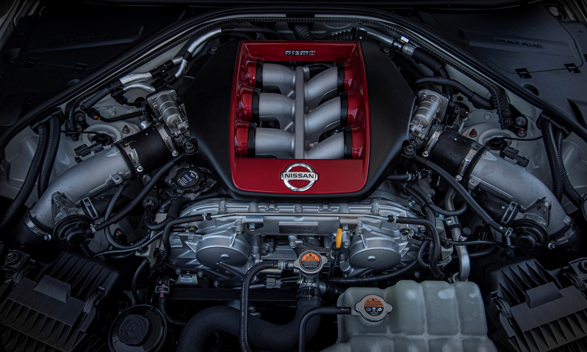

Review Bugatti Tourbillon

0


Des del seu debut el 2007, el Nissan GT-R ha captivat els amants dels cotxes esportius amb la seva combinació de tecnologia avançada, disseny agressiu i un rendiment capaç de desafiar marques molt més cares. Conegut amb el sobrenom de "Godzilla" per la seva capacitat de dominar tant a les pistes com als carrers, aquest vehicle icònic segueix sent una referència al món de l’automoció. A continuació, analitzem tot el que fa especial el Nissan GT-R.
Motor i Rendiment: La Bèstia sota el Capó
El cor del Nissan GT-R és el seu llegendari motor V6 biturbo de 3.8 litres, muntat a mà pels enginyers "Takumi" al Japó. Genera 565 cavalls de potència (600 CV a la versió NISMO) i un parell de 467 Nm, cosa que permet al GT-R accelerar de 0 a 100 km/h en només 2,9 segons. Tot aquest poder es transmet a les quatre rodes mitjançant un sistema de tracció integral avançat i una transmissió automàtica de doble embragatge amb 6 velocitats, garantint un maneig precís fins i tot en les condicions més exigents.
Interior: Minimalisme amb Toques de Luxe
A l’interior, el GT-R combina practicitat amb luxe. Els seients esportius entapissats en cuir ofereixen un excel·lent suport per a una conducció agressiva, mentre que els materials d’alta qualitat, com la fibra de carboni i l’alumini, s’integren perfectament al disseny de l’habitacle. La consola central acull una pantalla tàctil amb múltiples configuracions que permeten monitoritzar el rendiment del vehicle, com la pressió del turbo, la força G i més. Tot i que és un cotxe esportiu, ofereix prou comoditat per a viatges llargs, encara que els seients del darrere són més simbòlics que pràctics.
Preu i Competidors
El Nissan GT-R té un preu base que ronda els 115.000 dòlars, cosa que el posiciona com una alternativa més assequible davant de superesportius europeus com el Porsche 911 Turbo, l’Audi R8 i el McLaren 570S. Tot i això, el que realment el distingeix és la seva relació qualitat-preu, ja que ofereix un rendiment similar per una fracció del cost.
Conclusió
El Nissan GT-R és més que un cotxe esportiu: és una icona. La seva combinació de potència bruta, conducció sofisticada i un disseny que segueix sent rellevant després de més d’una dècada el converteixen en una opció obligada per a qualsevol entusiasta dels cotxes. Tot i que no sigui el més modern en tecnologia o luxe, el seu llegat i la seva capacitat per competir amb models més nous el consoliden com una llegenda viva al món de l’automoció.